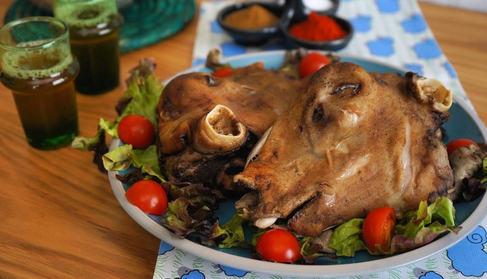

Skopo

Description
Skopo, otherwise known as “Smiley” is a classic South African delicacy. The meal consisting of a sheep head gained notoriety amongst Zulu taxi drivers and is now found at every taxi rank or township corner throughout South Africa.
Ingredients
- Sheep head
- 2 onions
- 2 chilli beef cubes
- Boiling water
- Brown onion soup
- Olive Oil
- Barbecue spice
- Steak & Chops spice
Steps
- If you want to go the traditional route, we suggest you use 2 chilli beef stock cubes so that the Skopo has a flavour-filled base to marinate in.
- Chop the onions into smaller pieces
- Place stove on medium heat
- Add boiling water to large pot
- Add the Skopo to the large pot of boiling water
- Add the chopped onion pieces
- Boil for 30 minutes before adding the chilli beef stock
- Boil for another hour or so and add brown onion soup to create a sauce for your skopo
- (Always have a kettle of boiling water ready incase your pot gets dry)
- Continue cooking the meal while stirring for an hour and a half or 2 hours (Depends on how soft your want the meat to be)
- Once satisfied with the texture of your meat you can switch off the stove and let it simmer
- One can then either decide to eat as is with pap but because it’s festive and every meal is a statement, we going gourmet and making further changes.
- Remove your Skopo from the chilli beef broth and place in an oven pan.
- Add your favourite spices but we suggest barbecue spice and steak and chops.
- Add a little olive oil and place in the oven for 15 minutes.
- When the Skopo is golden brown and the smell can’t be ignored, then you know it’s ready.